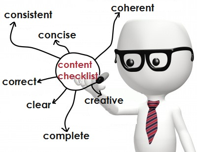

In this Section, you will learn about grammar and interviews. You will learn about specific grammar you need to know to send emails and communicate effectively. The interview part will teach you all about conducting an interview and some methods used when answering questions in an interview. Both parts include video demonstrations of each topic and links to other websites that go into further detail. If the video demonstration is not clear or just can’t explain everything on the topic the page will go into further detail explaining more. Our website also has a discussion board, so if you are still confused do not hesitate to ask.
Click here to learn about Prepositions
